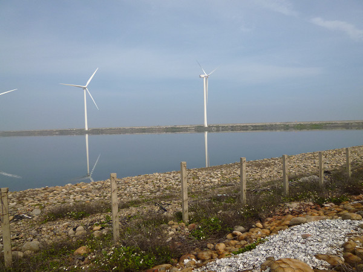

Life Stories > Family Background
Hsing-Wu Huang was born in a simple town – Xianxi Township. The town closes to the Taiwan Strait in the west. Before Zhangbin Industrial Park was developed, it was an endless tidal flat on the west of the highway. When the sea was in high tide, this tidal flat was submerged in seawater, yet more than 70% of residents relied on farming for a living. Also this area is remote and close to the ocean, soil was not fertile, and the northeast monsoon was strong; they could only plant one period of rice every year. They planted hardy corps such as chufa, garlic, or onion in other times. Therefore, residents farm oysters and clam, or go fishing in the sea to supplement family needs. In the early 1960s, there were many people farming ducks for their avocation, so the area was famous for being the “kingdom of duck eggs”.
Xianxi Township is the smallest in the area and the least popular town in Changhua County. “Wine in head and water in tail” is the biggest characteristic of this town. Xianxi Township relies on ear for living. Since the tide is not predictable, fishermen usually do sea fishing at midnight. Living in accordance to the weather makes people from Xianxi learn to go with the flow, and never insistent. Since Xianxi is located in the outfall of Dadu River and Yangzicu River, fishery harvesting is very rich. For less than twenty thousand people, Xianxi actually owns many talents. In recent years, farming, fishing, and cultivation industries gradually decline, so the communities need to add various cultural and industrial characteristics into their tourism-developing plan. This can show rich nature cultural characteristics of coastal towns in Changhua. With the help of many villagers, Xianxi Township gradually transforms into a town for tourism and leisure, which combines with local industrial culture; what communities need is the spirit of selfless dedication like this. We agreed with Teacher Huang to work together to mold the future for Xianxi Township. [Note 1]
| The picture shows the coastal environment of the most beautiful coast – Hsien-Hsi Township |
Reference: (Except the notes, the text and pictures on these pages were based on interview transcriptions, photographs and writing taken by the project team.)
Note 1: http://searchme.blogsite.org/go.php?id=575822&type=People&.......